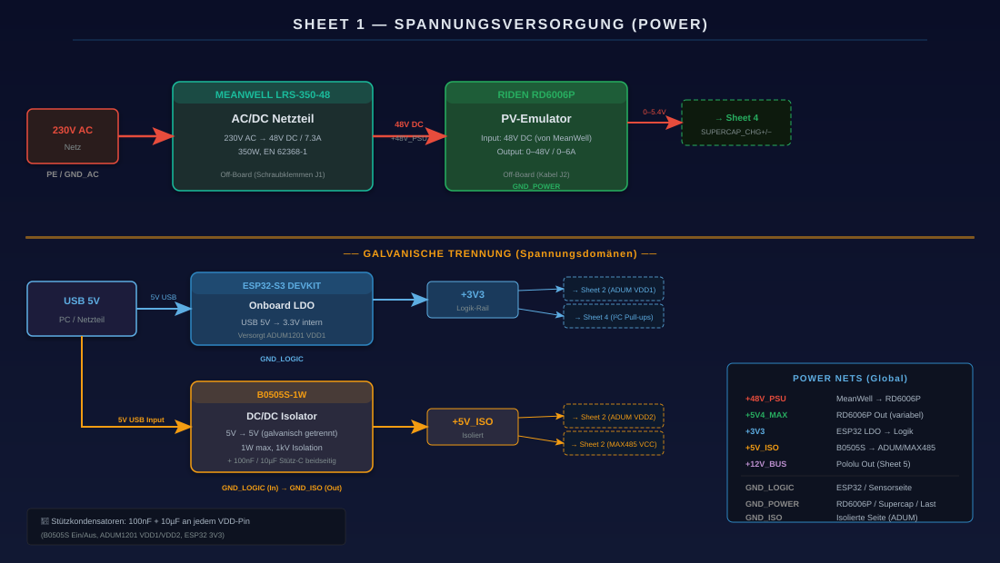
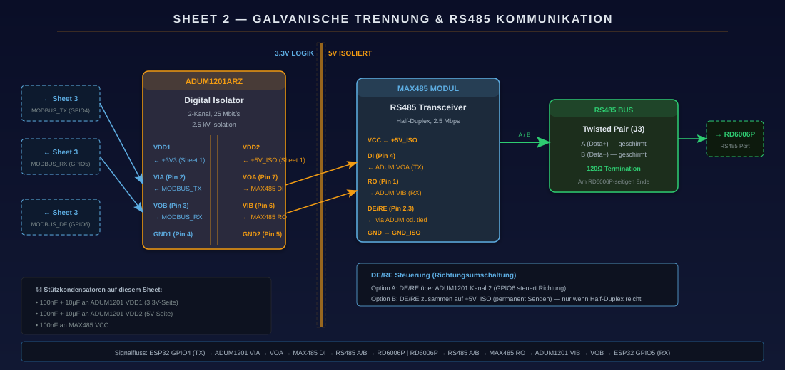
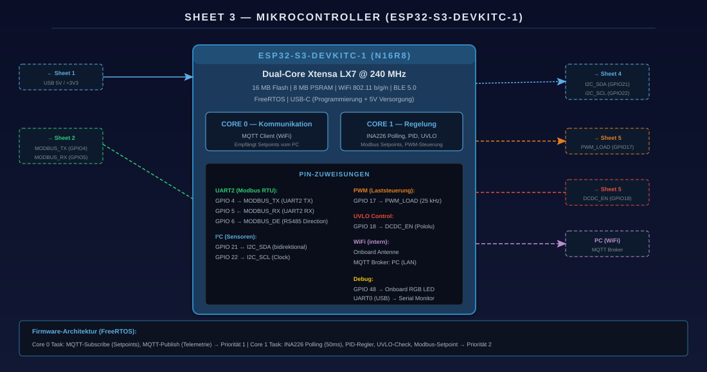
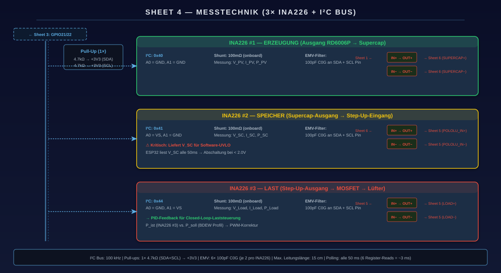
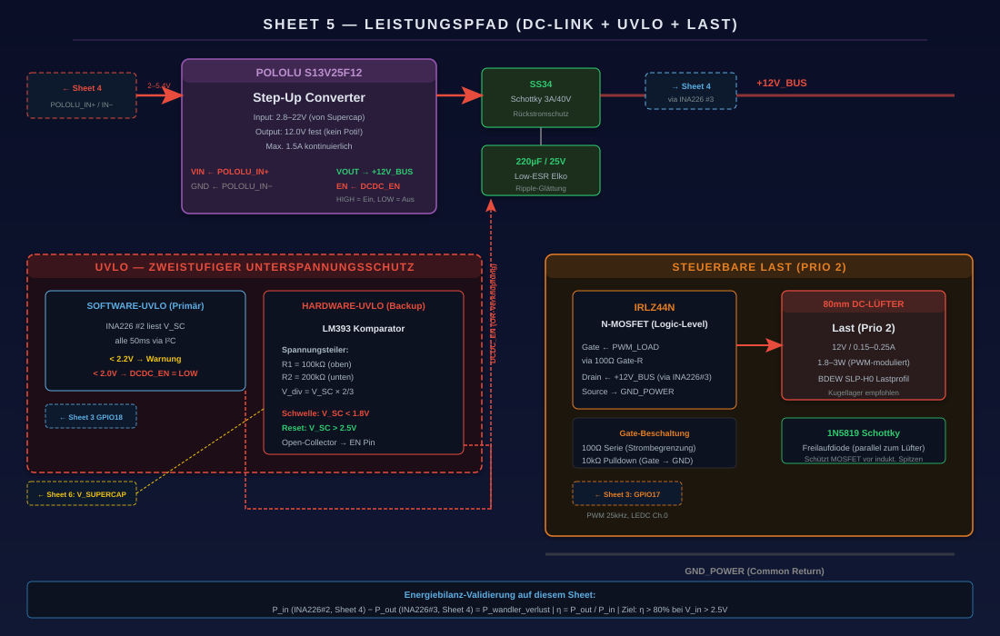
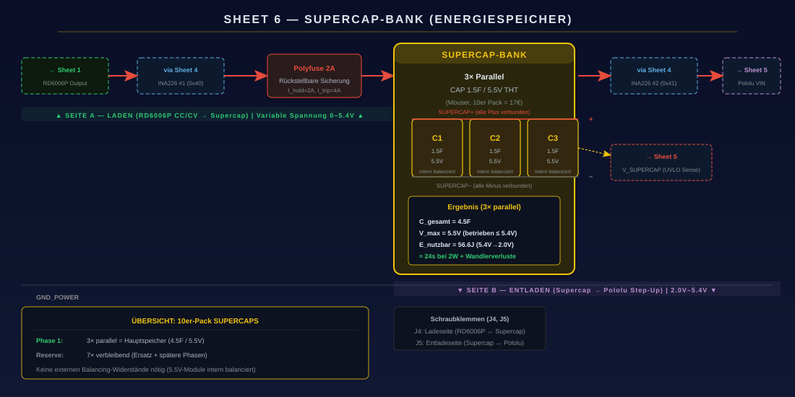

Hardware · Embedded systems
Smart Energy Node
A small, fully instrumented benchtop DC-microgrid testbed that emulates renewable sources, storage and dynamic loads in real hardware — a safe, reproducible platform for studying AI-based grid control.
Work in progress. This Master's project (MP1) is still ongoing — the results and figures shown here are preliminary and are being updated over time as the work progresses.

Overview
The energy transition is replacing a few big power plants with thousands of small, decentralized ones — rooftop solar, wind, biogas, home batteries — that must somehow form one stable grid. The research labs that study this with hardware-in-the-loop setups cost six figures. The Smart Energy Node shrinks the core idea down to a lab bench: a real, measurable DC microgrid you can hold in your hands, built as the physical foundation for the reinforcement-learning controllers in my companion project.
System design
Six subsystems, one shared bus.
The node is built as a hierarchical six-sheet schematic in Altium Designer, each sheet a self-contained functional block. Together they take mains power in, run a microcontroller, emulate a renewable source, buffer energy, drive a controllable load, and measure everything along the way.
- Power supply — a MeanWell 48 V industrial supply feeding isolated 5 V rails and the ESP32's 3.3 V logic.
- Galvanic isolation & RS485 — an ADUM1201 digital isolator (2.5 kV) with a MAX13487E transceiver for a robust field bus.
- Microcontroller — an ESP32-S3 running FreeRTOS, splitting Wi-Fi/telemetry and real-time control across its two cores.
- Measurement — INA226 sensors on I²C reading voltage, current and power at every key node.
- Power path & load — an IRLZ44N low-side MOSFET driving a fan-plus-resistor load by PWM, with flyback protection.
- Supercapacitor bank — the energy buffer that smooths the bus, protected by a resettable fuse and a TVS clamp.
The clever part is the source. Instead of simulating a solar panel in software, a programmable supply in constant-current mode is paired with a passive chain of power diodes whose combined forward voltage reproduces a real panel's nonlinear current–voltage curve — the characteristic "knee" at the maximum-power point — entirely in hardware. It's a simple, robust trick adopted on my supervisor's recommendation.






Methods & tools
Simulated, characterised, then built.
The design was de-risked before a single part was soldered. The circuit was simulated in LTspice, and a Python model computed a single-diode solar curve from real Bielefeld weather data. To choose the right hardware source, I ran a dedicated bench experiment — the "diode-chain" measurement — sweeping current from 10 to 500 mA and deriving each diode's true current–voltage curve from two INA226 sensors, to pick the exact number of diodes that places the knee at the 5.5 V bus.
A spreadsheet model balanced combined wind-and-solar generation against load hour by hour for a full day, and the firmware — ESP32 with FreeRTOS — drives the source set-points over Modbus, regulates the load by PWM, and streams live telemetry over MQTT to a PC for logging.
Results & deliverables
A working testbed with real measurements.
- A functioning node that ran a simulated 48-hour day on real Bielefeld weather, with live voltage, current and power logged at both the source and the load.
- Real measurement data captured over two days in March 2026, recording the full source- and load-side electrical behaviour through a simulated day.
- A quantified energy balance — for the modelled day, emulated generation of ≈ 47.6 Wh against ≈ 64.4 Wh of load, making the storage-and-deficit problem concrete.
- A complete build package — a ten-page wiring and assembly guide with exact pin and address maps, a full bill of materials, and design checklists.
- Engineering targets set and tracked: energy-balance error under 2–3%, Modbus failure rate under 0.1% over 24 h, and dynamic response under one second.
From bench to brain. This node was always meant to be more than a demo — it is the sim-to-real target for the multi-agent RL controllers. Designing the hardware and its digital twin together is what makes it possible to claim a learned policy could actually run on the board.
Technology
Toolchain.
Scope note
The project spans two layers: the single-source node that was physically built and measured, and an expanded four-source design — adding wind, biogas and a battery with multiplexed sensing — that becomes the full platform for the reinforcement-learning work. The figures above describe the built node; the four-source version is the planned extension.